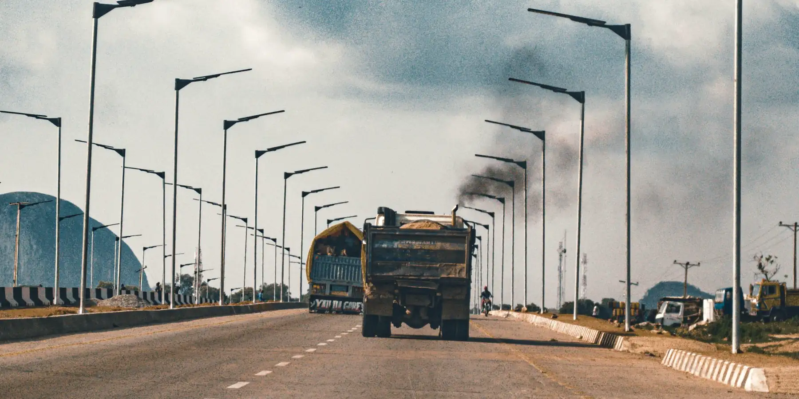

Accueil / À propos
À propos de Transport 2D Sénégal
Une société sénégalaise spécialisée dans la logistique pétrolière de haute performance. Elle opère dans un marché libéralisé mais rigoureusement encadré par l'État, et détient les agréments officiels garantissant sa conformité aux standards les plus stricts du secteur.
Une référence dans le transport d'hydrocarbures au Sénégal
Transport 2D transporte par la route des produits pétroliers raffinés pour des compagnies pétrolières, des distributeurs de carburant, des clients industriels et des clients commerciaux. Le produit est enlevé au dépôt et livré aux stations-service, aux sites industriels et aux destinations commerciales agréées.
Sa force réside dans son capital humain : une équipe de direction expérimentée, des cadres et techniciens supérieurs rompus aux standards pétroliers, et des chauffeurs professionnels formés à la sécurité des matières dangereuses. L'équipe est reconnue par les majors parmi les meilleures du Sénégal.
| Raison sociale | Transport 2D Sénégal SASU |
|---|---|
| Directeur général | Ousmane Tanor Mbaye |
| Agrément | Opérateur agréé par l'État sénégalais, avec tarifs réglementés |
| Activité principale | Transport routier de produits pétroliers raffinés |
| Siège | 87, Rue Amadou Assane Ndoye, BP 19841, Dakar |
| Base opérationnelle | Km 14, Route de Rufisque, Dakar |
| Flotte | 15 camions-citernes en propre et 50 camions partenaires mobilisables |
| Marchés | Sénégal, Gambie, Guinée-Bissau, Guinée et Mali |
| Clients | Compagnies pétrolières, distributeurs de carburant, clients industriels et commerciaux |
| Numéro d'immatriculation | À confirmer |
Devenir l'une des principales entreprises de transport d'hydrocarbures du Sénégal en proposant des solutions logistiques sûres, fiables et efficaces, au service de la sécurité énergétique nationale et de la croissance économique.
- 2026Aujourd'hui
- Excellence opérationnelle
- Leadership en sécurité
- Valeur ajoutée pour les partenaires
- 2026-2027Croissance
- Leader du marché au Sénégal
- Optimisation des corridors régionaux
- Digitalisation complète
- 2028+Expansion et GPL
- Pionnier du transport de gaz liquéfié (GPL)
- Partenariats en Afrique de l'Ouest
- Hub logistique de l'énergie
Nos engagements
Quatre engagements valables pour chaque chargement et chaque contrat.
Sécurité
La sécurité est notre priorité absolue : procédures HSE strictes, contrôles avant départ, respect des itinéraires et formation continue des chauffeurs. Notre objectif : zéro incident et la protection des personnes, des biens et de l'environnement.
Fiabilité
Maintenance proactive de la flotte et discipline opérationnelle, pour des livraisons ponctuelles et sans interruption sur toute la durée du contrat.
Innovation
Investissement dans les technologies de suivi et d'optimisation pour améliorer l'efficacité et réduire l'impact environnemental.
Partenariat
Construction de relations durables et de confiance avec les acteurs majeurs de l'énergie, nationaux et régionaux.
Nos partenaires
Des acteurs nationaux et internationaux de l'énergie qui confient leur logistique énergétique critique à Transport 2D.
Partenaires nationaux
- Senelec
- Eydon
- Atlantic Petroleum Africa
- Kleros
- YaraOil
Partenaires internationaux
- Oryx Energies
- Jah Oil Company
Les noms des partenaires sont affichés en texte. Leurs logos pourront les remplacer avec l'accord de chaque partenaire.
Travailler avec Transport 2D
Envoyez votre besoin de transport pour obtenir un devis, ou proposez un partenariat à plus long terme.